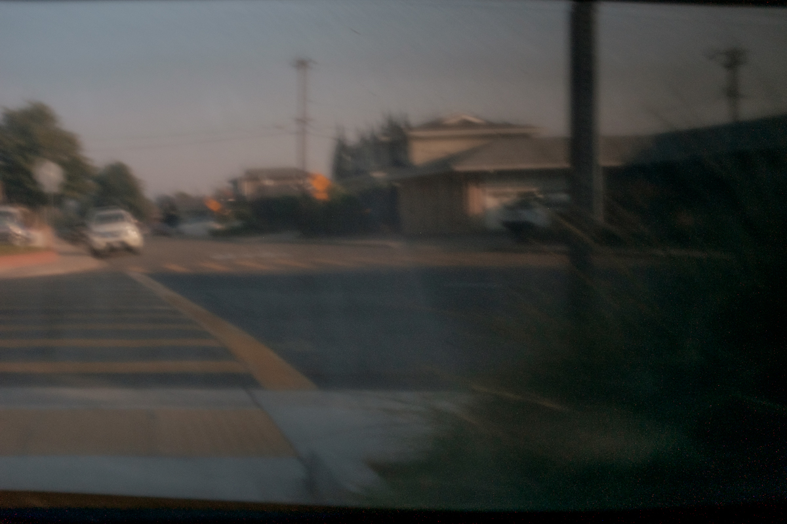
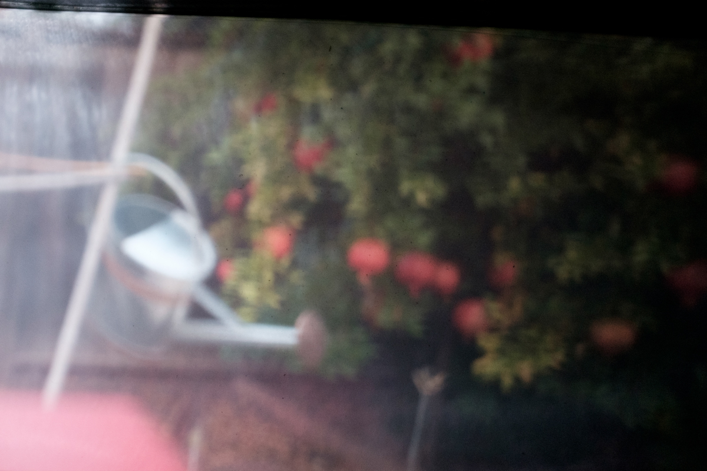
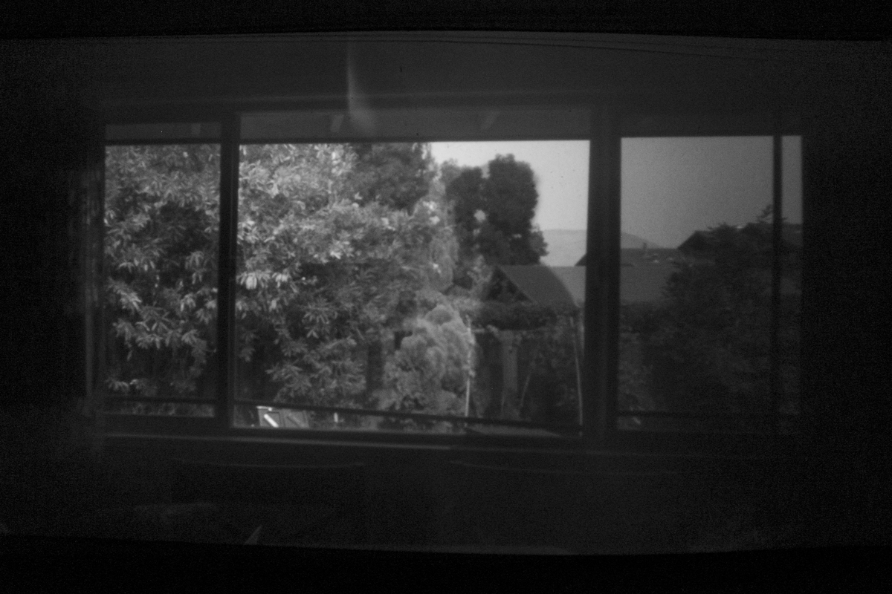

**Pinhole Camera Assignment**
Dartmouth CS 73: Computational Photography, Fall 2020 (Professor Jarosz)
Hanlin Wang
**A site documenting my pinhole camera creation process**
Constructing the Camera
==============================================================
A pinhole camera works using the natural phenomenon of *camera obscura*---where an image in the real world is projected through a small opening onto a screen inside an otherwise dark container.
Camera Obscura
Box Design
--------------------------------------------------------------
For this assignment, rather than going through the trouble of developing photographic film, we were asked to digitally capture the pinhole image.
Thus I used my Fuji digital camera as an additional component to the pinhole contraption, by mounting it onto another opening the size of the camera lens.
Digital Camera ObscuraA shoebox serves well as the box. White printer paper is affixed to the back face as the screen. Non-screen surfaces are covered with black tape to minimize reflections. Any possible gaps on the outside of box are covered with tape as well, to make the entire box lightproof.Cutting a hole the size of my digital camera's lens for it to "peek" into the box and capture images on the screen.Another hole cut out, this one rectangular and covered with foil. Pinhole goes here. The foil makes it easy to punch and test pinholes of various sizes.A mount made using my camera's lens hood for easy attachment and removal of the camera (for ease of reviewing images and adjusting camera settings).
Pinhole Calculation
--------------------------------------------------------------
The idea pinhole diameter is given by $1.9\sqrt{f \lambda}$, where $f$ is the distance from pinhole to screen (19cm for my box), and $\lambda$ is the wavelength of light (about 550nm). This gives an ideal pinhole diameter of roughly 0.6mm.
I decided to test 3 pinhole diameters---0.6mm (which I anticipated to form the clearest image) and also 1.5mm and 5mm, to see the effects of a larger pinhole.
3 holes of varying diameters punched into the foil. Two of them are covered at a time. The uncovered one is the active pinhole.
Testing and Debugging the Camera
==============================================================
Various setups.Light leaks. I realized they were from slight gaps in the camera mount, so I carefully reinforced with duct tape.

Shake was pretty apparent in this handheld 25 second exposure. I decided to stick with a tripod from then on.Framing was tricky. I realized I needed to point the box to the left of the scene I wanted to capture for it to be centered in frame.Getting my camera to always focus on the screen in the box was difficult. Autofocus lock would reset after taking an image, so I ended up manually focusing on the distance from the opening to the screen, being careful not to touch the focus ring. I managed to get these two decent photos.
Final Images
==============================================================
Scene 1: Pomegranate Tree and Watering Can
(Aperture was f/2.8, shutter speed and ISO were calibrated to normalize the exposure of each image)
0.6mm pinhole1.5mm pinhole

5mm pinhole
Scene 2: Telephone Pole Wires
(Aperture was f/2.8, shutter speed and ISO were calibrated to normalize the exposure of each image)
0.6mm pinhole1.5mm pinhole5mm pinhole
As expected from the calculation, the 0.6mm pinhole gave the sharpest image. The 1.5mm pinhole gave a brighter (so I used a smaller exposure time and lower ISO) and slightly blurrier image. The 5mm pinhole produced an even brighter and blurrier image.
Thought I didn't test a pinhole smaller than 0.6mm, I would expect it to get blurrier due to the diffraction limit. $1.9\sqrt{f \lambda}$ gives the "sweet spot" between blurriness and diffraction.
Gallery (More Images)
--------------------------------------------------------------
(All taken with the 0.6mm pinhole)

Taking advantage of long exposure time to create a "ghost" effect, by posing in frame for a portion of the exposureMultiple pinholes of various sizes exposed at once
Bedroom Camera Obscura
==============================================================
For extra credit, I turned my room into a giant pinhole camera.
Setup
--------------------------------------------------------------
Blocking all light from my window with cardboard and tapePinhole made using the same approach. Distance from the window to the opposite wall is 3.175 meters, so $1.9\sqrt{f \lambda}$ gives an ideal pinhole diameter of 2.5mmView looking out the pinholeReady to shootFirst test shot
Final Images
--------------------------------------------------------------
First test shotThere was something very comforting about being in a dark room with the only light coming from the pinholeIf only I could do a handstand